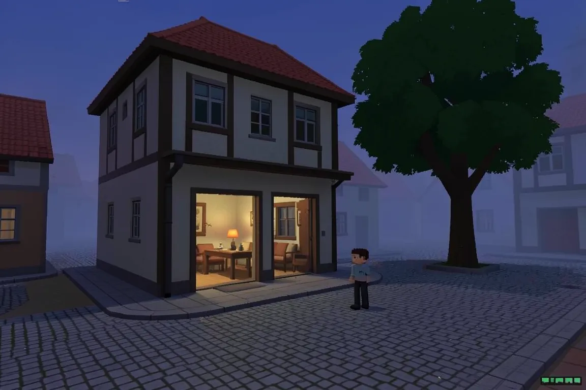

spill · 1994–2001 · også: PS1-utseende, N64-utseende, 32/64-bits 3D
3D i sanntid på omtrent 320×240: figurer på noen hundre polygoner, små teksturer på 64 eller 128 px, toppunktbelysning og tåke ved bakre klippeplan. På én konsoll vrir teksturene seg og toppunktene vibrerer; på en annen blir de uskarpe.

Kjerneidé
En verden av få polygoner kan likevel besøkes: en boks med et bilde på hver flate blir et rom kameraet går inn i.
Designprinsipper
Bygg figurer av 300 til 1000 trekanter og rom av enkle bokser.
Bruk teksturer på 64×64 til 128×128 px, med detaljene malt inn.
Lys med farge per toppunkt; bak skygger inn i teksturene.
La tegneavstanden ende i tåke i én farge.
Hold bildet på 320×240 eller lignende, og godta trappede kanter.
Bruk et fritt kamera eller et tredjepersonskamera som følger etter.